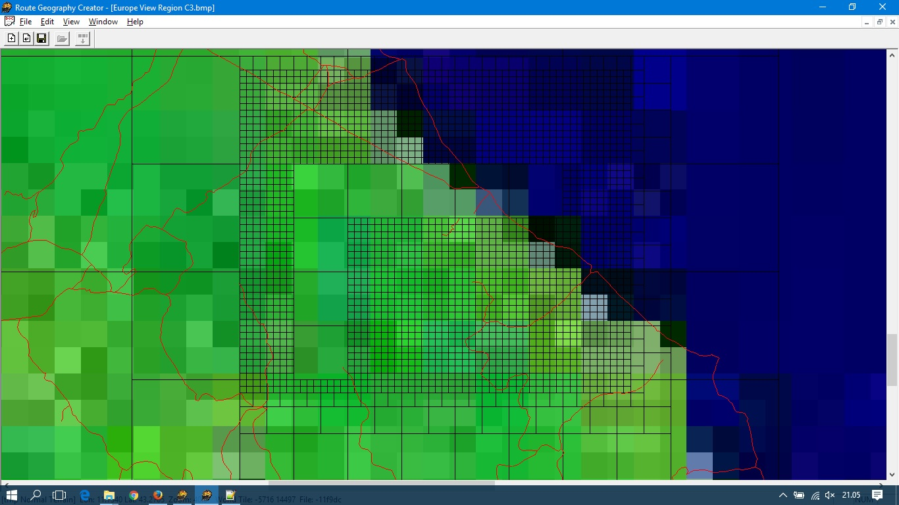

5. Completare le montagne distanti¶
Se avete creato le montagne distanti con Demex in modalità Demostration
queste sono state generate solo parzialmente. Con un trucco perfettamente legale
spiegato da Trensimpedia
si possono avere delle montagne “complete”.
5.1. Generare il quad-tree nella route temporanea¶
Apriamo con il Route Geometry Extractor la route temporanea e
nel menù File clicchiamo su New Quad Tree
Dobbiamo adesso creare un quad-tree identico a quello delle distant mountains, con i quadrettoni grandi.
5.1.1. Generare il quad-tree¶
Selezioniamo l’area occupata dalle Distant Mountains,
all’interno della selezione, cliccando con il tasto destro del mouse appare un menu
dal quale dobbiamo selezionare Add all Selection Tiles. Possiamo ripetere l’operazione
più volte fino a selezionare tutta la zona che ci interessa.
Notiamo che abbiamo i quadrettini piccoli (in effetti è un terreno normale).
Clicchiamo su un quadrettino con il tasto destro del mouse e scegliamo Merge tiles
e vedremo il nostro quadretto quadruplicarsi. Ripetiamo altre due volte l’operazione
sullo stesso quadretto ed avremo un tile della stessa dimensione di quello delle Distant Mountains.
Con pazienza ingrandiamo anche tutti gli altri quadretti.
Infine, sempre cliccando con il tasto destro del mouse sui quadrettoni,
dal menu selezioniamo Toggle Populated State per gli stessi quadrettoni
selezionati per le distant mountains del capitolo precedente.
5.2. Modellare il terreno con Demex¶
Apriamo Demex in modalità Unregistered.
Carichiamo le DEM come visto in precedenza e selezioniamo la route temporanea.
Ora apriamo il menù Standard terrain e selezioniamo la voce Create Route Terrain.
Al termine dell’operazione possiamo chiudere Demex
5.3. Trasferire i tiles¶
A questo punto non ci resta che copiare tutti i files contenuti nella cartella TILES
della route temporanea nella cartella LO_TILES della route effettiva sovrascrivendo quelli esistenti.
Ora abbiamo delle Distant Mountains complete.
In effetti files generati con questa procedura risultano 16 volte più ingombranti rispetto a quelli che si ottengono con il Demex registrato, ma il loro ingombro complessivo non dovrebbe spaventare nessuno.